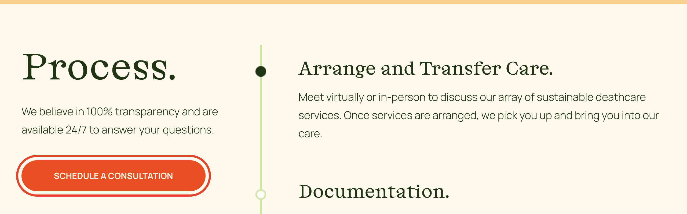
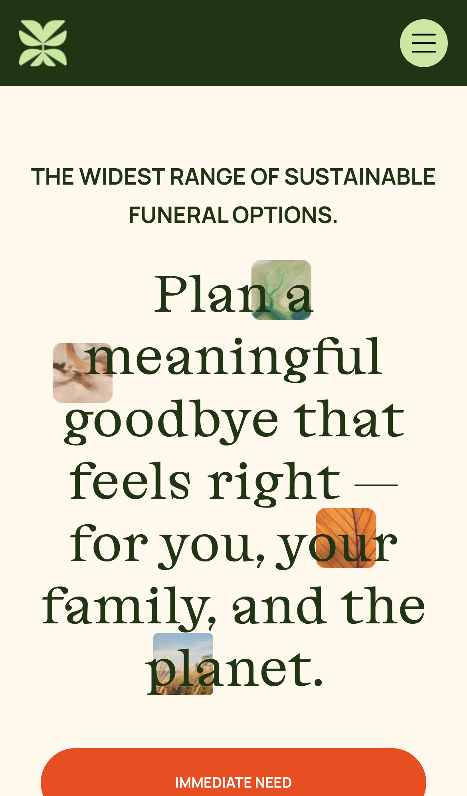

How fast lifesource.earth loads for families, and where the website may be losing people who are ready to reach out.
lifesource.earthI tested 7 key pages with Google Lighthouse, the same tool behind Google's speed ratings, on both a computer and a mid range phone. The site is in good shape on desktop. On mobile, where most families search, a broken button, a hidden phone number and two slow pages can quietly send people to another funeral home.
The range of your packages, from your own price list. If just one family a month gives up on the website and calls someone else, that is a real loss every month. Most fixes in this report are small and fast.
In the Process section of the homepage, right under "available 24/7 to answer your questions", this button links back to the homepage itself. When someone taps it, the page simply reloads. A person who was ready to talk to you gets nothing.

On a phone, the top bar shows only the logo and the menu. Your number, 213.395.0034, is inside the menu and at the very bottom of the page.
Families with an immediate need are often stressed, grieving and searching on their phone. They should be able to call you with one tap, from any page, without searching.

Mobile score: 51 out of 100. While the page loads, a block of text moves down the screen. Google measures this as "layout shift": your page scores 0.33, and Google rates anything above 0.25 as poor. Visitors lose their place or tap the wrong thing. This is the page for pre planning, your most valuable kind of enquiry.
Mobile score: 56 out of 100. The main content appears after 7.2 seconds. Obituaries are often the most visited pages of a funeral home website, because families share the link with friends and relatives. Every one of those visitors is a person meeting LifeSource for the first time.
Tools for email popups, analytics and widgets keep a phone busy for almost a full second. In the phone test the page was not fully ready to use until about 12 seconds in, and about 420 KB of code is downloaded but never used.
| Tool | What it does | Time it blocks the phone |
|---|---|---|
| Klaviyo | Email signup popups | 0.40 s |
| Google Tag Manager | Analytics | 0.27 s |
| Website platform code | Runs the site | 0.14 s |
| Elfsight | Widget | 0.13 s |
The fix: load email and widget tools a few seconds after the page appears, and remove any tool no longer in use. Nothing is lost, the page just feels ready sooner.
Three homepage photos weigh 190 to 300 KB each and use an older format. One of them loads straight away even though it is far down the page. Converting them to a modern format (WebP) and loading them only when needed saves about 300 KB on every homepage visit, with no visible loss of quality.
Effort: about 1 hour in total. Your SEO score would move from 85 toward 100.
Your website promises that you are available 24/7, and that is a real strength. Today, though, a family who visits at 11 pm can only call or fill a form and wait. There is no calendar to book a consultation, no instant reply and no text option. Many people who are planning ahead also need a few gentle reminders before they are ready.
| Page | Speed score | Main content shows | Main issue |
|---|---|---|---|
| Home | 79 | 1.8 s | Add on tools block the phone |
| Plan Ahead | 51 | 3.5 s | Content jumps while loading |
| Obituaries | 56 | 7.2 s | Slow obituary widget |
| Contact | 77 | 1.7 s | Add on tools block the phone |
| Aquamation | 76 | 2.8 s | Large images, add on tools |
| Terramation | 73 | 3.2 s | Large images, add on tools |
| Packages | 72 | 3.4 s | Large images, add on tools |
Scores out of 100. Google rates 90 and above as good, 50 to 89 as needs work, under 50 as poor.
Start with the quick wins so families stop slipping away this week. Then speed up the key pages. Then make sure no enquiry goes unanswered, day or night.
I would be glad to walk you through these findings and answer any questions. You can fix the first item on your own today. For the rest, I can handle everything for you with a clear, fixed price and a before and after report so you can see the difference.
Abdulwasiu | Fiverpulse
How this audit was done. Tests ran on 16 November 2026 with Google Lighthouse 12 (simulated mid range phone on a 4G connection, plus desktop), automated browser checks of links and layout, and screenshots on an iPhone sized screen. Lab results can differ slightly from real visitors depending on their phone and connection. Prices quoted are from LifeSource's public General Price List (October 2026). No changes were made to the website.